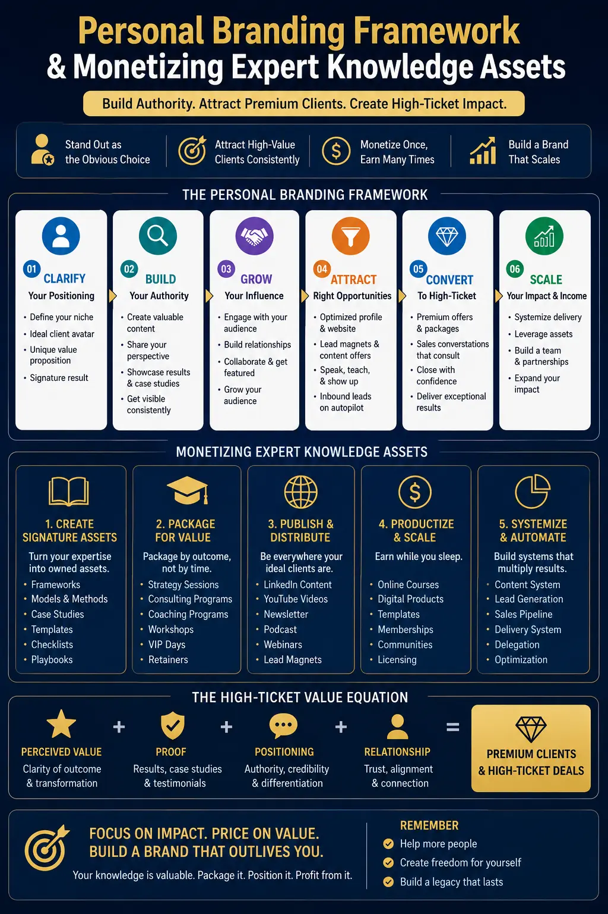
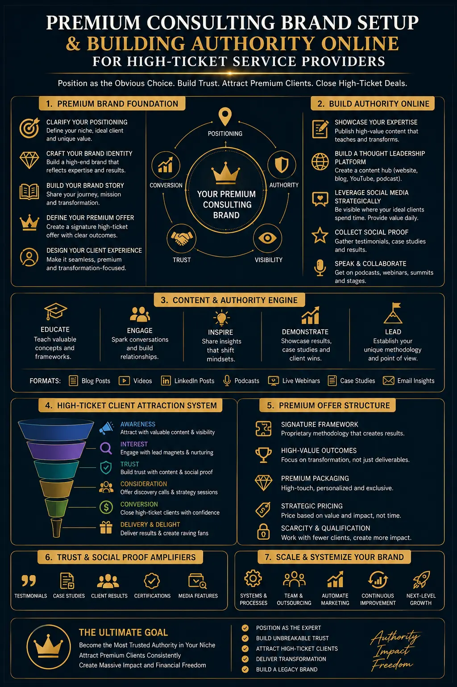

High-Conversion Personal Branding Frameworks for High-Ticket Services
Why High-Ticket Services Require a Structured Personal Branding Framework
The difference between a consultant who charges five thousand rupees per hour and one who commands fifty thousand rupees per hour is rarely a difference in raw skill. It is almost always a difference in how their expertise is perceived, positioned, and communicated to the market. That difference is the product of a deliberate personal branding framework — a structured system that converts professional expertise into a recognisable, trust-generating brand identity that attracts premium clients and justifies premium pricing.
High-ticket services — consulting engagements, advisory retainers, executive coaching, strategic design, legal counsel, and professional advisory work — are sold on trust, authority, and demonstrated expertise rather than on price comparison. The client investing significantly in a professional service provider is not searching for the cheapest option; they are searching for the most credible, the most authoritative, and the most clearly positioned expert for their specific problem. A personal branding framework is the system that ensures every touchpoint — from LinkedIn profile to website to speaking engagement to published content — communicates that authority with consistency and precision.
This guide covers the complete architecture of a high-conversion personal branding framework for high-ticket service providers: personal brand architecture, monetizing expert knowledge assets, premium consulting brand setup, building authority online, self-marketing for consultants, high-intent personal branding keywords, personal business growth plans, and packaging expert knowledge into formats that convert authority into revenue.
Personal Brand Architecture: The Structural Foundation
Personal brand architecture is the structural design of an expert's complete brand ecosystem — how the core positioning statement, content platforms, service offerings, visual identity, and audience touchpoints connect and reinforce each other to create a cohesive authority-building system. Unlike corporate brand strategy, personal brand architecture centres on an individual, which means the brand is inseparable from the person's expertise, experience, personality, and professional trajectory.
The five structural elements of effective personal brand architecture for high-ticket service providers:
- Core positioning statement. A single, specific sentence that defines who you serve, what transformation you deliver, and why you are the credible authority to deliver it. The positioning statement is not a tagline — it is the strategic foundation from which every other brand decision flows. A positioning statement that tries to serve everyone serves no one with enough specificity to justify premium pricing.
- Expertise pillar structure. Three to five clearly defined content pillars that represent the specific areas of expertise the brand communicates authority in. Each pillar should be narrow enough to demonstrate depth and broad enough to sustain consistent content creation. These pillars become the organising structure for all content, all speaking topics, and all service descriptions.
- Service tier design. A structured hierarchy of service offerings — from entry-level engagements to premium retainers — that allows different client segments to enter the relationship at different investment levels while creating a natural progression toward higher-value engagements. The service tier design is a critical element of personal business growth plans because it creates predictable revenue pathways.
- Visual identity system. A consistent visual language — photography style, colour palette, typography, headshot quality, document design — that communicates the premium positioning of the brand across every platform. The visual identity of a high-ticket personal brand must communicate professionalism and authority at every touchpoint; a single inconsistent visual element can undermine the trust that the entire brand system is designed to build.
- Authority validation framework. A systematic approach to accumulating and displaying third-party validation — client testimonials, case studies, media mentions, speaking engagements, published work, certifications, and institutional affiliations — that provides the social proof premium clients require before making significant investment decisions.
Monetizing Expert Knowledge Assets: From Expertise to Revenue
Monetizing expert knowledge assets means systematically converting the specialised knowledge, experience, methodologies, and insights that an expert possesses into commercially valuable products and services — and then using the personal branding framework to position those assets for premium pricing. Every consultant, coach, and professional advisor possesses knowledge assets that are far more commercially valuable than they realise, because the knowledge is trapped in their head rather than structured into marketable formats.
The process of packaging expert knowledge into revenue-generating formats:
Proprietary Frameworks and Methodologies
The most valuable knowledge asset any consultant possesses is a proprietary framework — a structured, repeatable methodology for solving a specific category of problem. When a consultant can articulate not just what they do but the systematic process they follow, the perceived value shifts from hourly labour to intellectual property. Packaging expert knowledge into named, documented frameworks is the single most effective way to justify premium pricing and differentiate from competitors who offer the same skills without the structured methodology.
Scalable Knowledge Products
Beyond one-to-one consulting, expert knowledge can be packaged into scalable formats — digital courses, training programmes, licensed methodologies, published books, and subscription-based advisory content. These products allow monetizing expert knowledge assets beyond the constraint of available hours, creating revenue that is not directly proportional to time invested and building the authority that reinforces the premium positioning of the one-to-one services.
Case Study Libraries as Sales Assets
Every successful client engagement is a knowledge asset that can be documented, structured, and deployed as a sales tool. A well-constructed case study library — showing the specific problem, the methodology applied, and the measurable result achieved — is one of the most powerful conversion tools in a high-ticket personal branding framework because it provides evidence-based proof of capability rather than self-reported claims of expertise.
Thought Leadership Content Strategy
Published thought leadership — articles, LinkedIn posts, podcast appearances, conference presentations, and industry commentary — is a knowledge asset that works continuously to attract inbound client enquiries. A structured thought leadership content strategy aligned with building authority online produces compounding returns: each piece of published content strengthens the expert's search visibility, social proof, and perceived authority simultaneously.

Premium Consulting Brand Setup: The Practical Implementation
A premium consulting brand setup is the practical implementation of the brand architecture — the specific platforms, assets, and systems that need to be created, configured, and maintained to bring the personal branding framework to life in the market. It is the operational layer that converts strategic positioning into tangible brand presence.
The essential elements of a premium consulting brand setup:
- Professional website with conversion architecture. Not a portfolio showcase — a strategically designed website that communicates the core positioning, displays the authority validation evidence, presents the service tiers, and guides the visitor toward a specific conversion action. The website is the central hub of the personal brand architecture and the destination for all traffic generated by content, search, and referral channels.
- LinkedIn profile optimised for authority positioning. For most consultants and professional service providers, LinkedIn is the single most important platform for self-marketing for consultants. An authority-optimised LinkedIn profile — with a professional headshot, a headline that communicates the positioning rather than the job title, a summary that articulates the value proposition, and a content history that demonstrates the expertise pillars — is the first impression most potential clients will encounter.
- Email nurture system with value-first sequencing. A structured email sequence that delivers genuine value — frameworks, insights, case studies, methodologies — before making any service offer. The email system is the mechanism that converts initial interest into trust-based relationships, and trust-based relationships into high-ticket client engagements.
- Professional visual assets. Executive headshots, branded document templates, presentation decks, social media graphics, and video thumbnails — all aligned with the visual identity system defined in the personal brand architecture. Visual consistency across all touchpoints reinforces the premium positioning and prevents the credibility erosion that occurs when visual quality is inconsistent.
Building Authority Online: Content Pillars and Distribution Strategy
Building authority online is not about posting frequently — it is about publishing strategically. The content strategy within a high-conversion personal branding framework must be designed to serve two simultaneous objectives: establishing the expert's authority in the minds of human audiences and optimising for search engine visibility through high-intent personal branding keywords.
The three content distribution channels that produce the highest return for self-marketing for consultants and expert service providers:
Long-Form Search-Optimised Content
- Publish in-depth articles and guides on the professional website that target specific high-intent personal branding keywords — the search terms potential clients use when actively seeking to hire an expert.
- Focus on topics that demonstrate deep expertise in the defined content pillars — not generic advice that any competitor could produce, but specific, experience-based insights that only a genuine practitioner would know.
- Include case study references, data points, and proprietary framework explanations that provide genuine value to the reader while demonstrating the methodology behind the service offering.
- Optimise each piece for both informational keywords that build authority and commercial keywords that capture clients actively searching for the service — a dual-intent content strategy that serves personal business growth plans at both the awareness and conversion stages.
LinkedIn Thought Leadership Publishing
- Publish consistently on LinkedIn with content that demonstrates expertise, shares genuine insights, and provides actionable value to the specific audience the expert serves.
- Use LinkedIn articles for in-depth thought leadership and LinkedIn posts for concise, engagement-driving insights — each format serving a different function in the building authority online strategy.
- Engage systematically with comments, respond to industry discussions, and contribute to relevant conversations — self-marketing for consultants on LinkedIn is as much about visible engagement as it is about published content.
- Build a connection strategy focused on potential clients, referral sources, and industry influencers rather than pursuing generic follower growth that does not serve the commercial objectives of the personal branding framework.
Speaking, Media, and Earned Authority
- Pursue speaking engagements — conference presentations, panel discussions, webinar appearances, podcast guesting — that position the expert in front of the specific audience that matches the ideal client profile.
- Contribute expert commentary to industry publications, news outlets, and professional media — each published mention becomes a permanent authority asset in the personal brand architecture.
- Document every speaking engagement and media appearance with professional photography and video — these assets become social proof content for the website, LinkedIn, and all marketing materials.
- Build relationships with journalists, podcast hosts, and event organisers as a systematic building authority online strategy — earned media is the most credible form of authority validation and cannot be purchased or manufactured.

High-Intent Personal Branding Keywords: The SEO Strategy for Client Acquisition
High-intent personal branding keywords are the specific search terms and phrases that potential clients use when they are actively seeking to hire an expert, consultant, or premium service provider — as opposed to informational keywords used by people simply researching a topic. Integrating these keywords into the personal branding framework is the mechanism that ensures the expert's brand appears at the exact moment a potential client is making a purchasing decision.
The keyword strategy for a high-conversion personal branding framework must address three layers of search intent:
- Awareness-level keywords. Informational terms that potential clients use when they are exploring a problem or topic — not yet ready to hire but beginning the journey that will eventually lead to a purchasing decision. Content optimised for awareness keywords builds the expert's search visibility and positions them as the authority the searcher encounters first. These keywords align with the expertise pillars and serve the building authority online objective.
- Consideration-level keywords. Comparative and evaluative terms that indicate the searcher is actively comparing options and considering whether to invest in professional services. Terms like "best consultant for," "how to choose a," and "what to look for in" indicate consideration intent. Content targeting these keywords should address the specific decision criteria that favour the expert's positioning — effectively using self-marketing for consultants through SEO.
- Conversion-level keywords. High-commercial-intent terms that indicate the searcher is ready to hire — "hire," "cost," "pricing," "retainer," "services," and "near me." Content optimised for conversion-level high-intent personal branding keywords should be designed with a clear call to action that makes it easy for the searcher to initiate contact. These keywords produce the highest conversion rates and the most immediate revenue impact of any content in the personal business growth plans.
Pricing Psychology and the Authority Premium
The pricing of high-ticket services is fundamentally a function of perceived authority, and perceived authority is fundamentally a function of the personal branding framework. When a personal brand architecture is correctly constructed — with consistent positioning, demonstrated expertise, visible social proof, and professional visual identity — the expert creates what behavioural economists call the "authority premium": the additional price the market is willing to pay for the perceived reduction in risk that comes from engaging a recognised authority rather than an unknown provider.
The specific mechanisms through which a personal branding framework enables premium pricing:
- Published expertise reduces perceived risk. A client considering a fifty-thousand-rupee consulting engagement is not evaluating the service — they are evaluating the risk of the investment not delivering value. Published thought leadership, detailed case studies, and a visible track record of expertise systematically reduce that perceived risk, making the premium price feel justified rather than speculative.
- Proprietary frameworks create perceived scarcity. When packaging expert knowledge into named, proprietary frameworks, the expert creates the perception that their methodology is unique and unavailable elsewhere — which eliminates the direct price comparison that forces commoditised services to compete on cost rather than value.
- Consistent visual professionalism signals premium positioning. The visual quality of the premium consulting brand setup — website design, headshot quality, document presentation, social media aesthetics — communicates the expert's self-assessed value to the market. A visually premium brand signals to the client that the expert operates at a premium level, which creates the expectation of premium pricing rather than the surprise of it.
Converting Thought Leadership Into Revenue: The Conversion Architecture
Authority without conversion architecture is brand awareness without business results. The final layer of a high-conversion personal branding framework is the systematic conversion of the trust, visibility, and authority generated by the content and brand positioning into actual client engagements and revenue.
The conversion architecture for monetizing expert knowledge assets through a personal brand:
- Lead magnets aligned with service offerings. Free resources — frameworks, checklists, templates, mini-courses — that demonstrate the expert's methodology and provide genuine value while capturing contact information. The lead magnet should be a sample of the expertise the paid service delivers at scale — giving the prospect a taste of the value and the confidence that the full engagement will deliver transformational results.
- Discovery call systems with pre-qualification. A structured process for converting inbound enquiries into qualified discovery calls — with pre-call questionnaires that ensure every conversation is with a potential client who matches the ideal client profile, has the budget for premium services, and has a genuine need that the expert's methodology can address.
- Proposal frameworks that sell the methodology, not the hours. High-ticket proposals should present the proprietary framework, the expected transformation, and the evidence of past results — not a list of hours, tasks, and deliverables. Selling the methodology rather than the time eliminates the hourly rate comparison that undermines premium pricing and positions the engagement as an investment in a proven system rather than a purchase of professional labour.
Conclusion
A high-conversion personal branding framework is not a marketing project — it is the commercial infrastructure that determines whether an expert's knowledge is valued at commodity rates or premium prices. From the structural foundation of personal brand architecture to the systematic process of monetizing expert knowledge assets, from the practical implementation of a premium consulting brand setup to the strategic deployment of high-intent personal branding keywords — every element works together to convert expertise into authority and authority into revenue.
Building authority online through structured content pillars, self-marketing for consultants through LinkedIn and search-optimised publishing, packaging expert knowledge into proprietary frameworks and scalable products, and developing personal business growth plans that create predictable revenue pathways — these are the disciplines that separate consultants who compete on price from consultants who compete on value.
At The PhD Ads, we build personal branding frameworks and personal brand architecture systems for consultants, coaches, and expert service providers — from visual identity and professional photography to content strategy and premium consulting brand setup — designed to convert authority into high-ticket revenue.
Key Topics
Ready to Build a Personal Branding Framework That Converts Authority Into High-Ticket Revenue?
At The PhD Ads in Madurai, we design and build complete personal branding frameworks for consultants, coaches, and expert service providers — from personal brand architecture and visual identity to content strategy, premium consulting brand setup, and packaging expert knowledge into systems that attract high-ticket clients and justify premium pricing.
Email: team@e2o.in